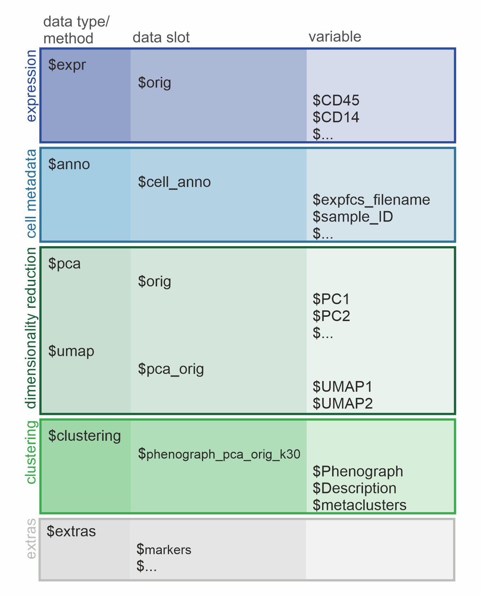
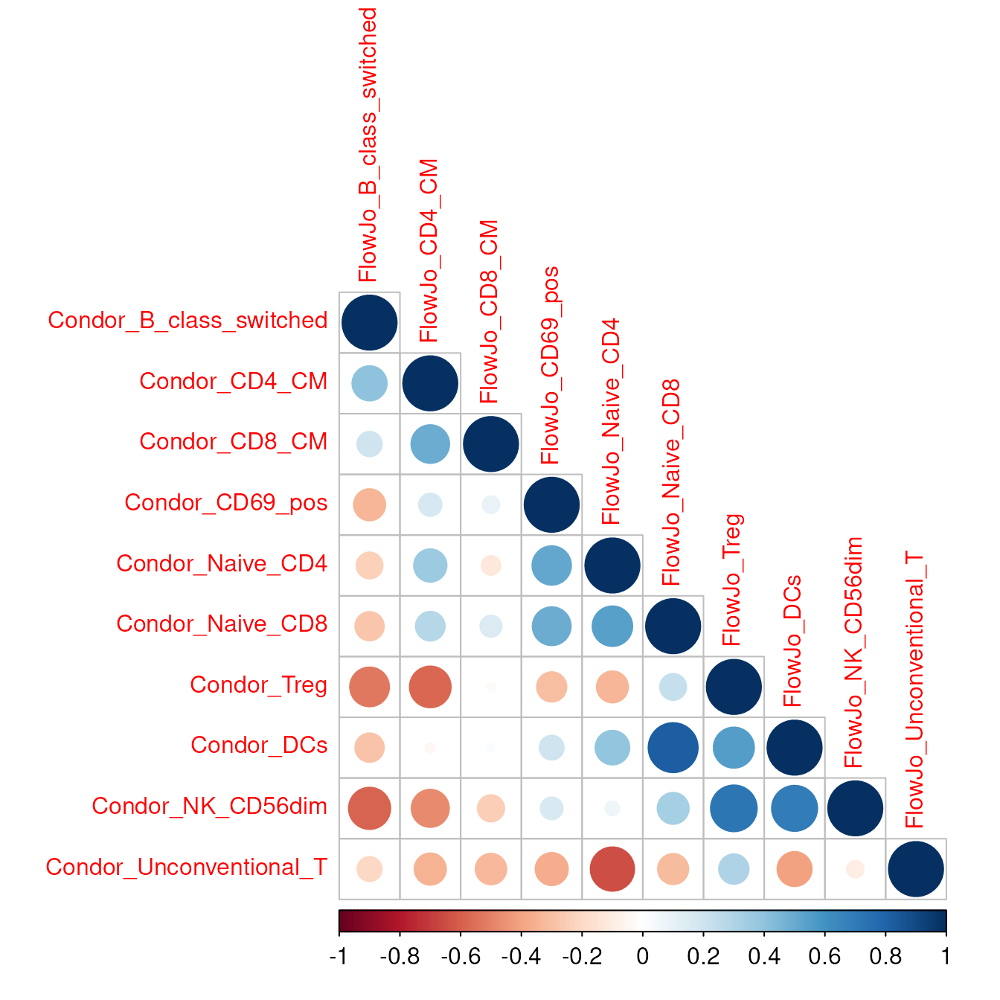

Introduction to the condor object and other utilities
Other_utilities.RmdIn this vignette we introduce the structure of the condor object and
showcase some useful cyCONDOR functions to interact with
it.
Load an example dataset
condor <- readRDS("../.test_files/condor_example_016_misc.rds")Structure of the condor object
Knowing the structure of one’s data object is a huge advantage to
maximize the ease of using bioinformatic tools for analysis. Due to it’s
straight-line composition, the structure of the condor
object is easy to grasp. It follows an hierarchical structure with 3
levels (data type/method -> data slot -> variable) and can be
separated into 5 major sections each representing one step of data
acquiring or analysis (expression, cell metadata, dimensionality
reduction, clustering and extras).

Graphic of the condor object structure. The hierarchical levels are depicted as columns and the the major sections are colored in.
Hierarchical structure
The 1st level describes the data types and methods present in the object followed by the 2nd level specifying separate data slots for the actual data stored as data frames (df). The 3rd level contains the variables (column names) of the respective df.
Overview of the 5 sections of a condor object
The data types $expr and $anno are created
while data loading and transformation of the condor object
is performed and serve as the basis for further data analysis.
Expression
The original, transformed expression values are saved in
$expr under the data slot $orig, containing
the cell markers as column names (variables) and unique cell IDs as row
names. If Batch normalization is performed on the expression values the
output is saved in a df under a new data slot ($norm).
Metadata
The metadata is saved under data type anno and data slot
cell_anno. The variables of this df correspond to the
provided cell annotation and can be used as the argument
group_var in many visualization functions.
Dimensionality reductions
Each output of a dimensionalty reduction or clustering function will
be saved as a df under their specified method (e.g. $pca,
$umap, $clustering) and data slot
(e.g. $orig, $pca_orig,
$phenograph_pca_orig_k30). The variables of the
dimensionality reductions (e.g. $PC1, $PC2)
will be used by cyCondor automatically as coordinates for
visualization embedding when the method and data slot are specified
(arg: reduction_method and
reduction_slot).
Clustering
After clustering a data slot will be created under the
$clustering method, named with a combination of the
relevant parameters used for the calculations (eg.
phenograph_pca_orig_k30). The available variables
(e.g. $Phenograph ) are used as a basis for cell labeling,
later saved under the variable (metaclusters).
Extract or change marker names
Get measured markers
The function measured_markers takes the condor object as
fcd input and returns the number of markers that are
included in the condor object and a list of their names. By directing
the output to a variable it is possible to save the list of the marker
names for future use.
expr_markers <- measured_markers(fcd = condor)## [1] "number of measured markers: 28"
## [1] "FSC-A" "SSC-A" "CD38" "CD8"
## [5] "CD195 (CCR5)" "CD94 (KLRD1)" "CD45RA" "HLA-DR"
## [9] "CD56" "CD127 (IL7RA)" "CD14" "CD64"
## [13] "CD4" "IgD" "CD19" "CD16"
## [17] "CD32" "CD197 (CCR7)" "CD20" "CD27"
## [21] "CD15" "PD-1" "CD3" "CD57"
## [25] "CD25" "CD123 (IL3RA)" "CD13" "CD11c"Change parameter names
The function change_param_name allows for the quick and
easy changing of single or multiple parameter names. It needs the condor
object as fcd input and vectors for the old and new
parameter names (old_names and new_names,
respectively). In the first example we change only the name of the
PD-1 marker to PD1.
condor <- change_param_name(fcd = condor,
old_names = "PD-1",
new_names = "PD1")## [1] "Changed parameter 'PD-1' to 'PD1' in orig."It is also possible to modify multiple names at the same time. The vector NewNames can either be written manually or computed using vector manipulations. In the second example below we exclude the protein names from the specific markers. It is important, that the order of the old and new marker names stay the same.
OldNames <- c("CD195 (CCR5)", "CD94 (KLRD1)", "CD127 (IL7RA)", "CD197 (CCR7)", "CD123 (IL3RA)")
NewNames <- unlist(strsplit(OldNames, " "))[2*(1:length(OldNames))-1]
condor <- change_param_name(fcd = condor,
old_names = OldNames,
new_names = NewNames)## [1] "Changed parameter 'CD195 (CCR5)' to 'CD195' in orig."
## [1] "Changed parameter 'CD94 (KLRD1)' to 'CD94' in orig."
## [1] "Changed parameter 'CD127 (IL7RA)' to 'CD127' in orig."
## [1] "Changed parameter 'CD197 (CCR7)' to 'CD197' in orig."
## [1] "Changed parameter 'CD123 (IL3RA)' to 'CD123' in orig."Get used markers
To keep track on which markers have been used as basis for
dimensionality reduction or clustering the respective markers are being
saved in the extra slot of the condor object. The
used_markers function can be used to extract those
markers.
It takes as input
- the
fcdobject (e.g. condor), - the
input_type(pca, umap, tSNE, diffmap, phenograph or FlowSOM), - the
data_slot(orig or norm), - the
prefix(if specified before, see dimensionality reduction or clustering)
and returns, similar to the measured_markers function,
the number and names of the markers used for the specific analysis
step.
pca_orig_markers <- used_markers(fcd = condor,
input_type = "pca",
data_slot = "orig",
prefix = NULL)## [1] "number of used markers in pca_orig : 28"
## [1] "FSC-A" "SSC-A" "CD38" "CD8" "CD195" "CD94" "CD45RA" "HLA-DR"
## [9] "CD56" "CD127" "CD14" "CD64" "CD4" "IgD" "CD19" "CD16"
## [17] "CD32" "CD197" "CD20" "CD27" "CD15" "PD1" "CD3" "CD57"
## [25] "CD25" "CD123" "CD13" "CD11c"Below we show an example of markers used for the PCA calculation with
an exclusion of the scatter markers FSC-A and
SSC-A. The prefix used in this PCA calculation
was defines as scatter_exclusion.
pca_scatter_exclusion_orig_markers <- used_markers(fcd = condor,
input_type = "pca",
data_slot = "orig",
prefix = "scatter_exclusion")## [1] "number of used markers in pca_scatter_exclusion_orig : 26"
## [1] "CD38" "CD8" "CD195" "CD94" "CD45RA" "HLA-DR" "CD56" "CD127"
## [9] "CD14" "CD64" "CD4" "IgD" "CD19" "CD16" "CD32" "CD197"
## [17] "CD20" "CD27" "CD15" "PD1" "CD3" "CD57" "CD25" "CD123"
## [25] "CD13" "CD11c"Check the integrity of the condor object
The check_IDs function can be useful to make sure the
condor object has the right structure for all downstream analysis. It
checks the cell IDs at each level and compares them to the
fcd$expr$orig data frame. If a discrepancy appears at any
point, a warning will be returned.
check_IDs(condor)## [1] "Everything looks fine"Merge or subset the condor object
Merge two condor objects
The merge_condor function combines two
condor objects comprised of the same parameters (markers).
This function will merge only expression table and annotation as all the
downstream analysis will need to be repeated. If the cell IDs are
doubled between the two objects the merging can not be facilitated.
condor_merged <- merge_condor(data1 = condor,
data2 = condor)Subset a condor object
The subset_fcd function subsets the condor
object to a specific number of randomly selected cells specified with
the size parameter. A seed can be set for
reproducibility.
condor_subset <- subset_fcd(fcd = condor,
size = 5000,
seed = 91)Subset a condor object equally for a variable
The subset_fcd_byparam function subsets the
condor object to a specific number of randomly selected
cells specified with the size parameter in each of the
specified param. A seed can be set for reproducibility.
condor_subset_sample <- subset_fcd_byparam(fcd = condor,
param = "sample_ID",
size = 500,
seed = 91)Filter a condor object to create a specific subset
The filter_fcd function can be useful to created a
specific subset of a condor object. It takes the row names
of the cells to be filtered as cell_ids input.
condor_filter <- filter_fcd(fcd = condor,
cell_ids = rownames(condor$expr$orig)[condor$clustering$phenograph_pca_orig_k_60$metaclusters == "Classical Monocytes"])Subsample the condor object with Geometric Sketching
The subsample_geosketch function can be useful if you
want to speed up calculations of large datasets, without loosing
information. It subsamples in a way, which preserves the topology of the
PCA of a condor object, therefore reducing the number of
data points, without skewing cell densities. You can provide the number
of cells you want to subset or the fraction of cells you want to subset
for.
condor_sub <- subsample_geosketch(condor,pca_slot = "orig",n_sub=10000)Compare cyCONDOR frequencies with FlowJo results
We provide an easy to use function to calculate the correlation between cyCONDOR results and the cell frequency obtained with other analysis tools such as FlowJo.
The two dataframe should look like this, it is impartant that every
colum name is starting with Condor_ for the condor
dataframe and FlowJo for the FlowJo dataframe.
df_condor## sample_ID Condor_B_class_switched Condor_CD4_CM Condor_CD8_CM
## 1 Sample_1 0.17143 0.34286 0.33571
## 2 Sample_2 0.13125 0.29375 0.33125
## 3 Sample_3 0.11333 0.26667 0.36667
## 4 Sample_4 0.16250 0.38750 0.36250
## 5 Sample_5 0.31429 0.41429 0.37143
## 6 Sample_6 0.20000 0.30000 0.40000
## 7 Sample_7 0.28182 0.29091 0.39091
## 8 Sample_8 0.21111 0.42222 0.63333
## 9 Sample_9 0.20000 0.30000 0.40000
## 10 Sample_10 0.25126 0.33445 0.41765
## Condor_CD69_pos Condor_Naive_CD4 Condor_Naive_CD8 Condor_Treg Condor_DCs
## 1 0.50714 0.51429 0.21429 0.22143 0.52857
## 2 0.52500 0.36250 0.26250 0.26250 0.53125
## 3 0.46667 0.36667 0.26667 0.33333 0.56667
## 4 0.52500 0.55000 0.45000 0.26250 0.62500
## 5 0.47143 0.37143 0.23571 0.23571 0.53571
## 6 0.50000 0.40000 0.30000 0.30000 0.60000
## 7 0.49091 0.39091 0.24545 0.24545 0.54545
## 8 0.51111 0.41111 0.31111 0.25556 0.55556
## 9 0.50000 0.40000 0.30000 0.30000 0.60000
## 10 0.50084 0.38403 0.26723 0.25042 0.53361
## Condor_NK_CD56dim Condor_Unconventional_T
## 1 0.94286 0.43571
## 2 0.96250 0.83750
## 3 0.96667 0.85333
## 4 0.96250 0.46250
## 5 0.91786 0.70357
## 6 1.00000 0.50000
## 7 0.91818 0.49091
## 8 0.92778 0.45556
## 9 1.00000 0.50000
## 10 0.91681 0.74370
corr_plot_comparison(condor_df = df_condor,
flowjo_df = df_flowjo,
sample_col = "sample_ID",
method_corr = "pearson",
tl.cex = 1,
cl.cex = 1)
## $corr
## FlowJo_B_class_switched FlowJo_CD4_CM FlowJo_CD8_CM
## Condor_B_class_switched 1.0000000 0.4070931 0.20753866
## Condor_CD4_CM 0.4070931 1.0000000 0.49201297
## Condor_CD8_CM 0.2075387 0.4920130 1.00000000
## Condor_CD69_pos -0.3384866 0.1769890 0.09909120
## Condor_Naive_CD4 -0.2350425 0.3656488 -0.12471427
## Condor_Naive_CD8 -0.2796814 0.2877308 0.15865182
## Condor_Treg -0.5213509 -0.5740163 -0.02528452
## Condor_DCs -0.2808977 -0.0330043 0.02388441
## Condor_NK_CD56dim -0.5875325 -0.4779746 -0.24093469
## Condor_Unconventional_T -0.2050349 -0.3406658 -0.32539938
## FlowJo_CD69_pos FlowJo_Naive_CD4 FlowJo_Naive_CD8
## Condor_B_class_switched -0.3384866 -0.23504254 -0.2796814
## Condor_CD4_CM 0.1769890 0.36564884 0.2877308
## Condor_CD8_CM 0.0990912 -0.12471427 0.1586518
## Condor_CD69_pos 1.0000000 0.51192706 0.4966880
## Condor_Naive_CD4 0.5119271 1.00000000 0.5404134
## Condor_Naive_CD8 0.4966880 0.54041336 1.0000000
## Condor_Treg -0.3012741 -0.33638501 0.2355740
## Condor_DCs 0.2004797 0.39475280 0.8251330
## Condor_NK_CD56dim 0.1691775 0.06996937 0.3351444
## Condor_Unconventional_T -0.3603367 -0.64692399 -0.3172894
## FlowJo_Treg FlowJo_DCs FlowJo_NK_CD56dim
## Condor_B_class_switched -0.52135090 -0.28089773 -0.58753250
## Condor_CD4_CM -0.57401632 -0.03300430 -0.47797463
## Condor_CD8_CM -0.02528452 0.02388441 -0.24093469
## Condor_CD69_pos -0.30127413 0.20047968 0.16917749
## Condor_Naive_CD4 -0.33638501 0.39475280 0.06996937
## Condor_Naive_CD8 0.23557398 0.82513302 0.33514439
## Condor_Treg 1.00000000 0.55599240 0.72054124
## Condor_DCs 0.55599240 1.00000000 0.69887312
## Condor_NK_CD56dim 0.72054124 0.69887312 1.00000000
## Condor_Unconventional_T 0.30378759 -0.40364451 -0.09851331
## FlowJo_Unconventional_T
## Condor_B_class_switched -0.20503488
## Condor_CD4_CM -0.34066582
## Condor_CD8_CM -0.32539938
## Condor_CD69_pos -0.36033672
## Condor_Naive_CD4 -0.64692399
## Condor_Naive_CD8 -0.31728937
## Condor_Treg 0.30378759
## Condor_DCs -0.40364451
## Condor_NK_CD56dim -0.09851331
## Condor_Unconventional_T 1.00000000
##
## $corrPos
## xName yName x y corr
## 1 FlowJo_B_class_switched Condor_B_class_switched 1 10 1.00000000
## 2 FlowJo_B_class_switched Condor_CD4_CM 1 9 0.40709305
## 3 FlowJo_B_class_switched Condor_CD8_CM 1 8 0.20753866
## 4 FlowJo_B_class_switched Condor_CD69_pos 1 7 -0.33848664
## 5 FlowJo_B_class_switched Condor_Naive_CD4 1 6 -0.23504254
## 6 FlowJo_B_class_switched Condor_Naive_CD8 1 5 -0.27968142
## 7 FlowJo_B_class_switched Condor_Treg 1 4 -0.52135090
## 8 FlowJo_B_class_switched Condor_DCs 1 3 -0.28089773
## 9 FlowJo_B_class_switched Condor_NK_CD56dim 1 2 -0.58753250
## 10 FlowJo_B_class_switched Condor_Unconventional_T 1 1 -0.20503488
## 11 FlowJo_CD4_CM Condor_CD4_CM 2 9 1.00000000
## 12 FlowJo_CD4_CM Condor_CD8_CM 2 8 0.49201297
## 13 FlowJo_CD4_CM Condor_CD69_pos 2 7 0.17698902
## 14 FlowJo_CD4_CM Condor_Naive_CD4 2 6 0.36564884
## 15 FlowJo_CD4_CM Condor_Naive_CD8 2 5 0.28773080
## 16 FlowJo_CD4_CM Condor_Treg 2 4 -0.57401632
## 17 FlowJo_CD4_CM Condor_DCs 2 3 -0.03300430
## 18 FlowJo_CD4_CM Condor_NK_CD56dim 2 2 -0.47797463
## 19 FlowJo_CD4_CM Condor_Unconventional_T 2 1 -0.34066582
## 20 FlowJo_CD8_CM Condor_CD8_CM 3 8 1.00000000
## 21 FlowJo_CD8_CM Condor_CD69_pos 3 7 0.09909120
## 22 FlowJo_CD8_CM Condor_Naive_CD4 3 6 -0.12471427
## 23 FlowJo_CD8_CM Condor_Naive_CD8 3 5 0.15865182
## 24 FlowJo_CD8_CM Condor_Treg 3 4 -0.02528452
## 25 FlowJo_CD8_CM Condor_DCs 3 3 0.02388441
## 26 FlowJo_CD8_CM Condor_NK_CD56dim 3 2 -0.24093469
## 27 FlowJo_CD8_CM Condor_Unconventional_T 3 1 -0.32539938
## 28 FlowJo_CD69_pos Condor_CD69_pos 4 7 1.00000000
## 29 FlowJo_CD69_pos Condor_Naive_CD4 4 6 0.51192706
## 30 FlowJo_CD69_pos Condor_Naive_CD8 4 5 0.49668799
## 31 FlowJo_CD69_pos Condor_Treg 4 4 -0.30127413
## 32 FlowJo_CD69_pos Condor_DCs 4 3 0.20047968
## 33 FlowJo_CD69_pos Condor_NK_CD56dim 4 2 0.16917749
## 34 FlowJo_CD69_pos Condor_Unconventional_T 4 1 -0.36033672
## 35 FlowJo_Naive_CD4 Condor_Naive_CD4 5 6 1.00000000
## 36 FlowJo_Naive_CD4 Condor_Naive_CD8 5 5 0.54041336
## 37 FlowJo_Naive_CD4 Condor_Treg 5 4 -0.33638501
## 38 FlowJo_Naive_CD4 Condor_DCs 5 3 0.39475280
## 39 FlowJo_Naive_CD4 Condor_NK_CD56dim 5 2 0.06996937
## 40 FlowJo_Naive_CD4 Condor_Unconventional_T 5 1 -0.64692399
## 41 FlowJo_Naive_CD8 Condor_Naive_CD8 6 5 1.00000000
## 42 FlowJo_Naive_CD8 Condor_Treg 6 4 0.23557398
## 43 FlowJo_Naive_CD8 Condor_DCs 6 3 0.82513302
## 44 FlowJo_Naive_CD8 Condor_NK_CD56dim 6 2 0.33514439
## 45 FlowJo_Naive_CD8 Condor_Unconventional_T 6 1 -0.31728937
## 46 FlowJo_Treg Condor_Treg 7 4 1.00000000
## 47 FlowJo_Treg Condor_DCs 7 3 0.55599240
## 48 FlowJo_Treg Condor_NK_CD56dim 7 2 0.72054124
## 49 FlowJo_Treg Condor_Unconventional_T 7 1 0.30378759
## 50 FlowJo_DCs Condor_DCs 8 3 1.00000000
## 51 FlowJo_DCs Condor_NK_CD56dim 8 2 0.69887312
## 52 FlowJo_DCs Condor_Unconventional_T 8 1 -0.40364451
## 53 FlowJo_NK_CD56dim Condor_NK_CD56dim 9 2 1.00000000
## 54 FlowJo_NK_CD56dim Condor_Unconventional_T 9 1 -0.09851331
## 55 FlowJo_Unconventional_T Condor_Unconventional_T 10 1 1.00000000
##
## $arg
## $arg$type
## [1] "lower"Session Info
info <- sessionInfo()
info## R version 4.4.2 (2024-10-31)
## Platform: x86_64-pc-linux-gnu
## Running under: Ubuntu 24.04.1 LTS
##
## Matrix products: default
## BLAS: /usr/lib/x86_64-linux-gnu/openblas-pthread/libblas.so.3
## LAPACK: /usr/lib/x86_64-linux-gnu/openblas-pthread/libopenblasp-r0.3.26.so; LAPACK version 3.12.0
##
## locale:
## [1] LC_CTYPE=en_US.UTF-8 LC_NUMERIC=C
## [3] LC_TIME=en_US.UTF-8 LC_COLLATE=en_US.UTF-8
## [5] LC_MONETARY=en_US.UTF-8 LC_MESSAGES=en_US.UTF-8
## [7] LC_PAPER=en_US.UTF-8 LC_NAME=C
## [9] LC_ADDRESS=C LC_TELEPHONE=C
## [11] LC_MEASUREMENT=en_US.UTF-8 LC_IDENTIFICATION=C
##
## time zone: Etc/UTC
## tzcode source: system (glibc)
##
## attached base packages:
## [1] stats graphics grDevices utils datasets methods base
##
## other attached packages:
## [1] cyCONDOR_0.3.0
##
## loaded via a namespace (and not attached):
## [1] IRanges_2.40.1 Rmisc_1.5.1
## [3] urlchecker_1.0.1 nnet_7.3-20
## [5] CytoNorm_2.0.1 TH.data_1.1-3
## [7] vctrs_0.6.5 digest_0.6.37
## [9] png_0.1-8 shape_1.4.6.1
## [11] proxy_0.4-27 slingshot_2.14.0
## [13] ggrepel_0.9.6 corrplot_0.95
## [15] parallelly_1.45.0 MASS_7.3-65
## [17] pkgdown_2.1.3 reshape2_1.4.4
## [19] httpuv_1.6.16 foreach_1.5.2
## [21] BiocGenerics_0.52.0 withr_3.0.2
## [23] ggrastr_1.0.2 xfun_0.52
## [25] ggpubr_0.6.1 ellipsis_0.3.2
## [27] survival_3.8-3 memoise_2.0.1
## [29] hexbin_1.28.5 ggbeeswarm_0.7.2
## [31] RProtoBufLib_2.18.0 princurve_2.1.6
## [33] profvis_0.4.0 ggsci_3.2.0
## [35] systemfonts_1.2.3 ragg_1.4.0
## [37] zoo_1.8-14 GlobalOptions_0.1.2
## [39] DEoptimR_1.1-3-1 Formula_1.2-5
## [41] promises_1.3.3 scatterplot3d_0.3-44
## [43] httr_1.4.7 rstatix_0.7.2
## [45] globals_0.18.0 rstudioapi_0.17.1
## [47] UCSC.utils_1.2.0 miniUI_0.1.2
## [49] generics_0.1.4 ggcyto_1.34.0
## [51] base64enc_0.1-3 curl_6.4.0
## [53] S4Vectors_0.44.0 zlibbioc_1.52.0
## [55] flowWorkspace_4.18.1 polyclip_1.10-7
## [57] randomForest_4.7-1.2 GenomeInfoDbData_1.2.13
## [59] SparseArray_1.6.2 RBGL_1.82.0
## [61] ncdfFlow_2.52.1 RcppEigen_0.3.4.0.2
## [63] xtable_1.8-4 stringr_1.5.1
## [65] desc_1.4.3 doParallel_1.0.17
## [67] evaluate_1.0.4 S4Arrays_1.6.0
## [69] hms_1.1.3 glmnet_4.1-9
## [71] GenomicRanges_1.58.0 irlba_2.3.5.1
## [73] colorspace_2.1-1 harmony_1.2.3
## [75] reticulate_1.42.0 readxl_1.4.5
## [77] magrittr_2.0.3 lmtest_0.9-40
## [79] readr_2.1.5 Rgraphviz_2.50.0
## [81] later_1.4.2 lattice_0.22-7
## [83] future.apply_1.20.0 robustbase_0.99-4-1
## [85] XML_3.99-0.18 cowplot_1.2.0
## [87] matrixStats_1.5.0 xts_0.14.1
## [89] class_7.3-23 Hmisc_5.2-3
## [91] pillar_1.11.0 nlme_3.1-168
## [93] iterators_1.0.14 compiler_4.4.2
## [95] RSpectra_0.16-2 stringi_1.8.7
## [97] gower_1.0.2 minqa_1.2.8
## [99] SummarizedExperiment_1.36.0 lubridate_1.9.4
## [101] devtools_2.4.5 CytoML_2.18.3
## [103] plyr_1.8.9 crayon_1.5.3
## [105] abind_1.4-8 locfit_1.5-9.12
## [107] sp_2.2-0 sandwich_3.1-1
## [109] pcaMethods_1.98.0 dplyr_1.1.4
## [111] codetools_0.2-20 multcomp_1.4-28
## [113] textshaping_1.0.1 recipes_1.3.1
## [115] openssl_2.3.3 Rphenograph_0.99.1
## [117] TTR_0.24.4 bslib_0.9.0
## [119] e1071_1.7-16 destiny_3.20.0
## [121] GetoptLong_1.0.5 ggplot.multistats_1.0.1
## [123] mime_0.13 splines_4.4.2
## [125] circlize_0.4.16 Rcpp_1.1.0
## [127] sparseMatrixStats_1.18.0 cellranger_1.1.0
## [129] knitr_1.50 clue_0.3-66
## [131] lme4_1.1-37 fs_1.6.6
## [133] listenv_0.9.1 checkmate_2.3.2
## [135] DelayedMatrixStats_1.28.1 Rdpack_2.6.4
## [137] pkgbuild_1.4.8 ggsignif_0.6.4
## [139] tibble_3.3.0 Matrix_1.7-3
## [141] rpart.plot_3.1.2 statmod_1.5.0
## [143] tzdb_0.5.0 tweenr_2.0.3
## [145] pkgconfig_2.0.3 pheatmap_1.0.13
## [147] tools_4.4.2 cachem_1.1.0
## [149] rbibutils_2.3 smoother_1.3
## [151] fastmap_1.2.0 rmarkdown_2.29
## [153] scales_1.4.0 grid_4.4.2
## [155] usethis_3.1.0 broom_1.0.8
## [157] sass_0.4.10 graph_1.84.1
## [159] carData_3.0-5 RANN_2.6.2
## [161] rpart_4.1.24 farver_2.1.2
## [163] reformulas_0.4.1 yaml_2.3.10
## [165] MatrixGenerics_1.18.1 foreign_0.8-90
## [167] ggthemes_5.1.0 cli_3.6.5
## [169] purrr_1.0.4 stats4_4.4.2
## [171] lifecycle_1.0.4 uwot_0.2.3
## [173] askpass_1.2.1 caret_7.0-1
## [175] Biobase_2.66.0 mvtnorm_1.3-3
## [177] lava_1.8.1 sessioninfo_1.2.3
## [179] backports_1.5.0 cytolib_2.18.2
## [181] timechange_0.3.0 gtable_0.3.6
## [183] rjson_0.2.23 umap_0.2.10.0
## [185] ggridges_0.5.6 parallel_4.4.2
## [187] pROC_1.18.5 limma_3.62.2
## [189] jsonlite_2.0.0 edgeR_4.4.2
## [191] RcppHNSW_0.6.0 ggplot2_3.5.2
## [193] Rtsne_0.17 FlowSOM_2.14.0
## [195] ranger_0.17.0 flowCore_2.18.0
## [197] jquerylib_0.1.4 timeDate_4041.110
## [199] shiny_1.11.1 ConsensusClusterPlus_1.70.0
## [201] htmltools_0.5.8.1 diffcyt_1.26.1
## [203] rappdirs_0.3.3 glue_1.8.0
## [205] XVector_0.46.0 VIM_6.2.2
## [207] gridExtra_2.3 boot_1.3-31
## [209] TrajectoryUtils_1.14.0 igraph_2.1.4
## [211] R6_2.6.1 tidyr_1.3.1
## [213] SingleCellExperiment_1.28.1 vcd_1.4-13
## [215] cluster_2.1.8.1 pkgload_1.4.0
## [217] GenomeInfoDb_1.42.3 ipred_0.9-15
## [219] nloptr_2.2.1 DelayedArray_0.32.0
## [221] tidyselect_1.2.1 vipor_0.4.7
## [223] htmlTable_2.4.3 ggforce_0.5.0
## [225] CytoDx_1.26.0 car_3.1-3
## [227] future_1.58.0 ModelMetrics_1.2.2.2
## [229] laeken_0.5.3 data.table_1.17.6
## [231] htmlwidgets_1.6.4 ComplexHeatmap_2.22.0
## [233] RColorBrewer_1.1-3 rlang_1.1.6
## [235] remotes_2.5.0 colorRamps_2.3.4
## [237] ggnewscale_0.5.2 hardhat_1.4.1
## [239] beeswarm_0.4.0 prodlim_2025.04.28